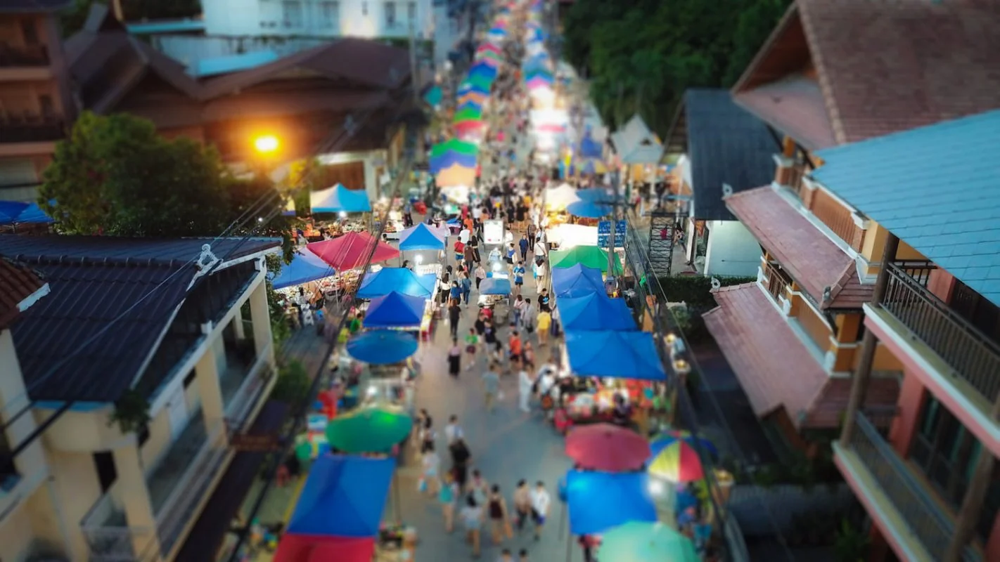

Housing
Rooms, apartments and houses vary enormously by neighbourhood. Where you live changes your commute, your budget and how much Thai you end up speaking.
Before you commit to anything
Ordinary days, strange and good. Whatever brings you here, you will spend most of your time simply living in this city, so it is worth knowing what that actually involves.

The city
Chiang Mai was the capital of the Lanna Kingdom before it was Thailand's second city. There are around three hundred temples inside the old city moat, mountains half an hour from most front doors, night markets where dinner costs a couple of dollars, and some of the best coffee grown anywhere in Asia.
There is also a real creative scene of studios, galleries and makers, a large international community, and a rainy season that will genuinely surprise you the first time. It is a comfortable place to live and an easy place to stay too comfortable in, which is worth knowing in advance.
What it costs
Chiang Mai is one of the cheaper cities in Asia to live in, which is part of why so many people end up staying. A student eating at markets and renting a simple room lives on very little. Someone renting a western style condo, eating out in cafes and running a car spends several times that, in the same city, on the same street.
We are not going to publish a monthly figure here, because any number would be wrong for half the people reading it and out of date within a year. What we will do is point you at people who cover it properly, and answer honestly about the specific costs of being here on a school or as staff.
Rooms, apartments and houses vary enormously by neighbourhood. Where you live changes your commute, your budget and how much Thai you end up speaking.
Eating Thai food from markets and street kitchens is cheap and very good. Eating western food in cafes is neither, and the gap between the two is most people's whole budget difference.
Songthaews, ride hailing apps, a scooter, or a bicycle if you are brave. Most people end up on a scooter and should think seriously about the licence and the insurance before they do.
What you need depends on why you are here and how long for. Students on a school get an education visa arranged before flying; staff and longer stays are a separate conversation.
Chiang Mai has good private hospitals and dentists at a fraction of western prices. Everyone should still arrive with medical insurance, and we ask outreach teams to buy it.
Air quality drops badly for several weeks in the first months of the year. It is the single thing most people wish they had known before arriving, so we would rather say it here.
Where to read more
Chiang Mai Ambassador is an independent guide to the city, written by long term residents, and it goes far deeper on the practical side than we sensibly can. These are the pages worth starting with. It is not a YWAM site and we have no connection to it beyond finding it useful.
Life on base
You arrive, you are hosted, and then fairly quickly you are expected to do your own washing and find your own dinner. Community here is real but it is not catering: people live in shared houses and apartments across the city rather than in one dormitory block.
New long term staff go through a culture and language phase before anything else, because ministering in Thai to Thai people requires Thai. It takes as long as it takes, and it is the difference between living here and visiting for a long time.
I came for the filmmaking. I stayed because for the first time my work and my faith weren't living in separate rooms.
Nadia, 24, Brazil
Sunday worship on the rooftop, geckos on the wall, mangoes from the market. I've never felt further from home, or more at home.
Jonas, 20, Germany
I wasn't even sure I believed any of it when I landed. Nobody panicked. They just let me ask everything.
Priya, 26, United Kingdom
Get involved
Money, visas, housing, whether your family would cope, what happens if it does not work out. None of these are awkward questions to us, and asking them early is a sign you are taking it seriously rather than a sign of doubt.
Contact
Tell us roughly what you are considering and we will tell you what it is really like, including the parts that are hard.
P.O. Box 113 CMU, Chiang Mai 50202, Thailand.
Follow along
Get social
Day to day base life shows up on Facebook and Twitter more than it does here.